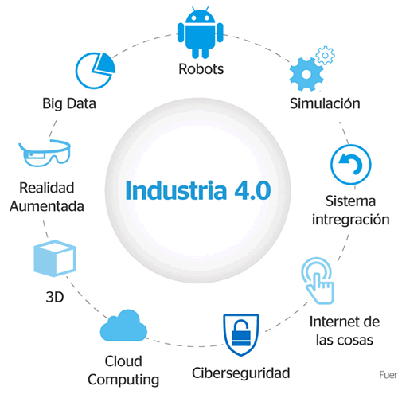
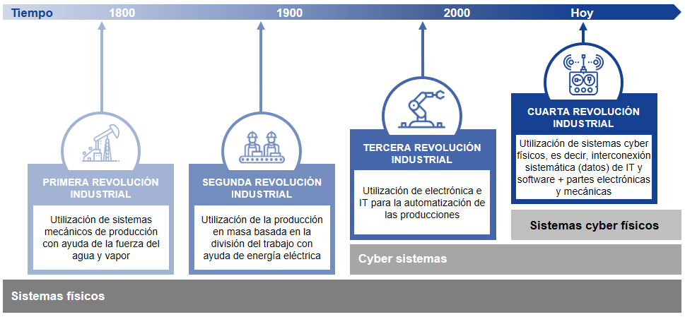
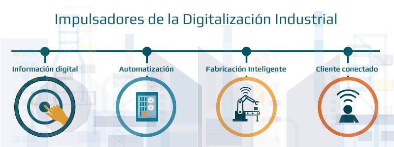

¿Que es la industria 4.0?

La industria 4.0 consiste en la digitalización de los procesos productivos en las fábricas mediante sensores y sistemas de información para transformar los procesos productivos y hacerlos más eficientes.
El concepto de industria 4.0 consiste en la introducción de las tecnologías digitales en las fábricas,
es la forma que hay de llamar al fenómeno de transformación digital aplicado a industria de producción
,así de sencillo y simple.
Si durante años se ha hablado del impacto del Internet de cosas (IoT) en industrias como la energética o de infraestructuras, bajo el concepto de Smart Cities. Ahora toca hablar de “Industria Inteligente” o industria 4.0.
¿Que es lo que ofrece?
Lo que ofrece la industria 4.0 a través de la digitalización y el uso de plataformas conectadas es:
- Una capacidad de adaptación constante a la demanda.
- Servir al cliente de una forma más personalizada.
- Aportar un servicio post venta uno a uno con el cliente.
- Diseñar, producir y vender productos en menos tiempo.
- Añadir servicios a los productos físicos.
- Crear series de producción más cortas y rentables.
- Aprovecha la información para su análisis desde múltiples canales (CMS, SCM, CRM, FCM, HRM, Help desk, redes sociales, IoT) brindando capacidad de analizarla y explotarla en tiempo real.
¿Cuales son sus puntos claves?
La nueva industria 4.0 tiene varios ejes entorno a los que se articula y que tú como fabricante tendrás que trabajar para integrar en tus plantas de producción:
- Big data y análisis de datos.
- Cloud Computing.
- Ciberseguridad.
- Robótica.
- Simulación y prototipado.
- Realidad aumentada.
- Cultura.
- Integración de procesos.
Evolucion de Industria 4.0... Comprendelo en una sola Imagen

¿Que impulso esta digitalizacion?
